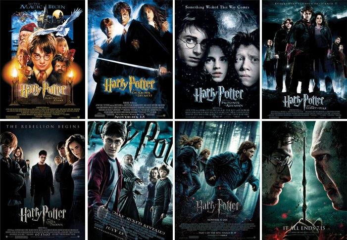

Casa de Hogwarts:

Gryffindor (Grifinória, na tradução brasileira) é uma das quatro casas de Hogwarts, fundada por Godric Gryffindor. A professora Minerva McGonagall é a chefe/diretora da casa. A mascote da casa é o leão e as suas cores são vermelho escarlate e dourado. De acordo com a J. K. Rowling a casa representa o fogo. As características dos alunos escolhidos para os Gryffindor são: coragem, ousadia, determinação, audácia e atrevimento. O fantasma da casa Gryffindor é o Sir Nicholas de Mimsy-Porpington, conhecido como Nick Quase-Sem-Cabeça (do inglês: Nearly Headless Nick).
Slytherin (Sonserina, na tradução brasileira) foi fundada por Salazar Slytherin. Até ao quinto livro, o professor Severus Snape é o chefe/diretor da casa, e a partir do sexto livro, o professor Horace Slughorn deixa a sua reforma e retorna a Hogwarts como professor de poções e chefe da casa Slytherin. A mascote da casa dos Slytherin é a serpente e as cores da casa são o verde e o prateado. A casa Slytherin representa a água. As características dos alunos selecionados para os Slytherin são: ambição, astúcia, liderança, desembaraço e individualismo. O fantasma da casa Slytherin é o Barão Sangrento.
Hufflepuff (Lufa-Lufa, na tradução brasileira) foi fundada por Helga Hufflepuff. A professora Pomona Sprout é a chefe/diretora da casa. As cores da casa são o amarelo e o preto e a sua mascote é o texugo. A casa Hufflepuff representa o elemento Terra. Os Hufflepuff são leais, trabalhadores, pacientes, justos, dedicados e verdadeiros. O fantasma da casa Hufflepuff é o Monge Gordo (Frei Gorducho, na tradução brasileira). A entrada para a Sala Comum dos Hufflepuff está oculta numa pilha de grandes barris, no corredor que dá para a cozinha de Hogwarts.
Ravenclaw (Corvinal, na tradução brasileira) foi fundada por Rowena Ravenclaw. O professor Filius Flitwick é o chefe/diretor da casa. As cores da casa são o azul e o bronze e a sua mascote é a águia. A casa Ravenclaw representa o ar. Os alunos Ravenclaw são inteligentes, criativos, perspicazes, prudentes e estudiosos. O fantasma da casa Ravenclaw é a Dama Cinzenta, conhecida no último livro por Helena Ravenclaw, filha da fundadora Rowena Ravenclaw. A Sala Comum dos Ravenclaw fica no lado oeste de Hogwarts, na torre dos Ravenclaw. Para se poder entrar na sala comum, tem de se responder a um enigma lógico.
OS Filmes:
Harry Potter é uma série de filmes britânico-americana baseada na série de livros homônima da escritora J. K. Rowling. A série é distribuída pela Warner Bros. e consiste em oito filmes, iniciando com Harry Potter e a Pedra Filosofal (2001) e finalizando com Harry Potter e as Relíquias da Morte - Parte 2 (2011). Além dos oito filmes, a partir de 2016 mais cinco filmes serão lançados passados no mesmo universo, sob a chancela Mundo Bruxo de J. K. Rowling ("J. K. Rowling's Wizarding World"), começando por Animais Fantásticos e Onde Habitam. Uma das 20 Maiores série cinematográfica de maior bilheteria de todos os tempos, com US $9.1 bilhões em receitas em todo o mundo, perdendo o posto de primeiro e segundo lugar apenas para o Universo Cinematográfico Marvel e para Star Wars.
JOGOS:
Hogwarts Legacy
Harry Potter: Hogwarts Mystery
Harry Potter: Puzzles & Spells